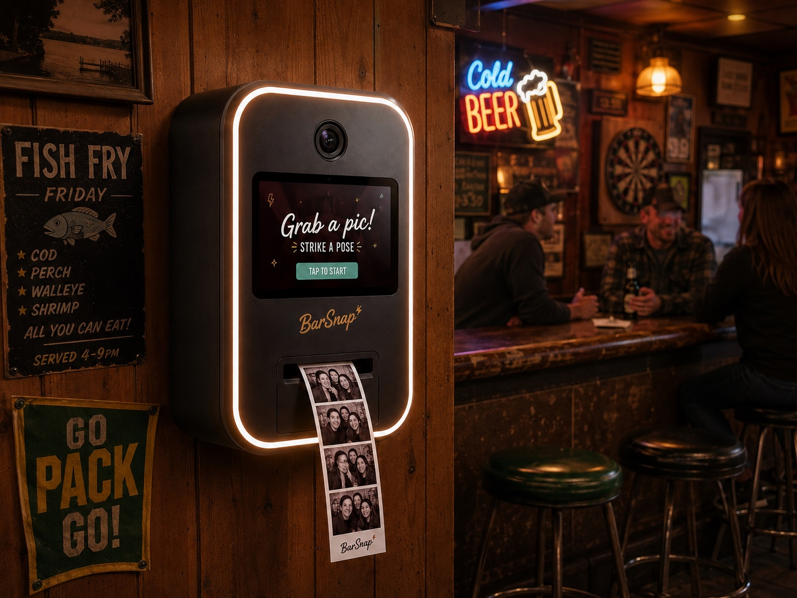
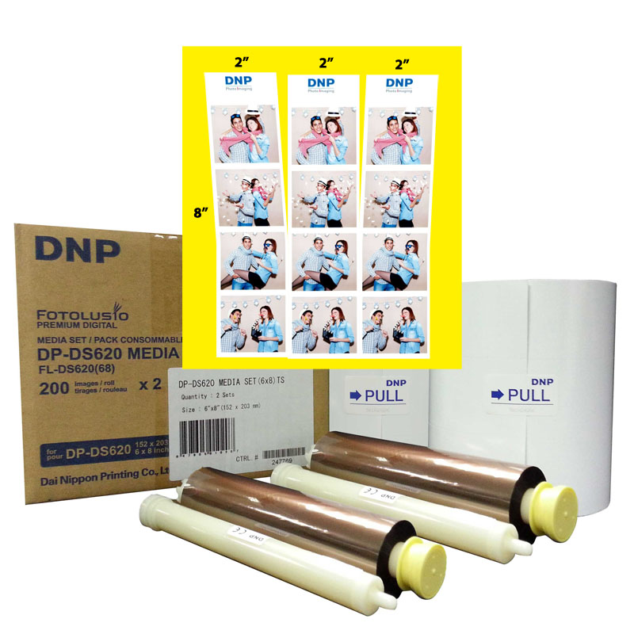
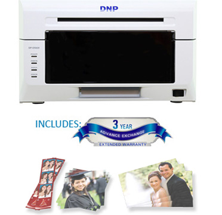
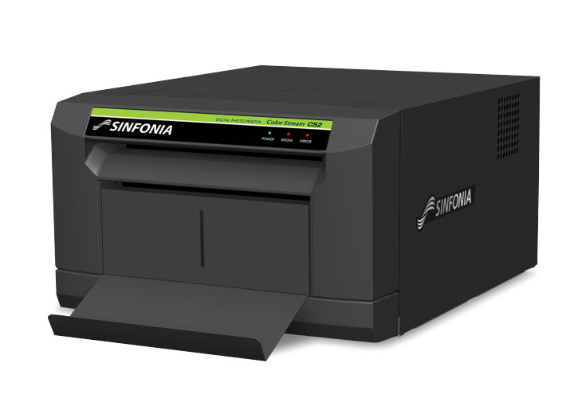
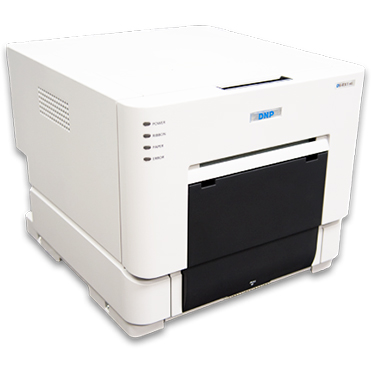
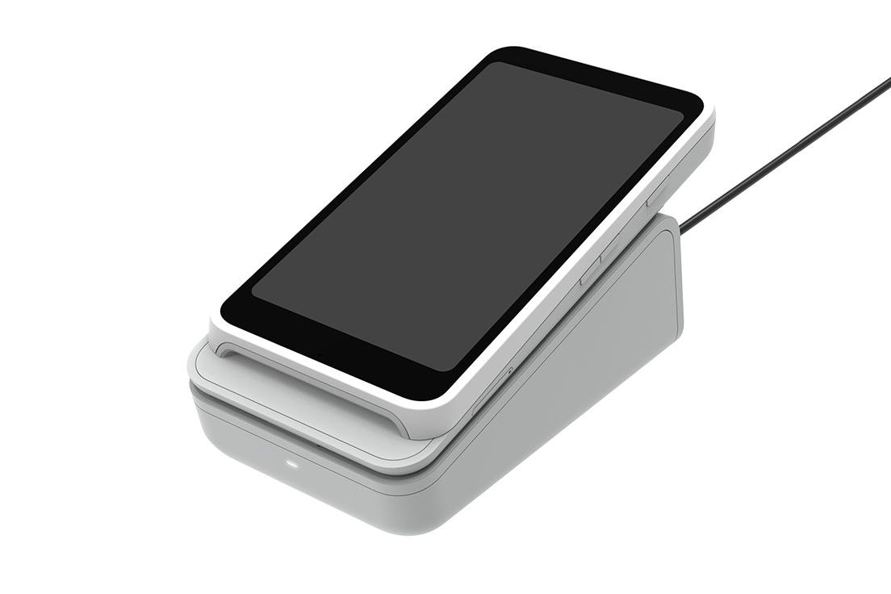
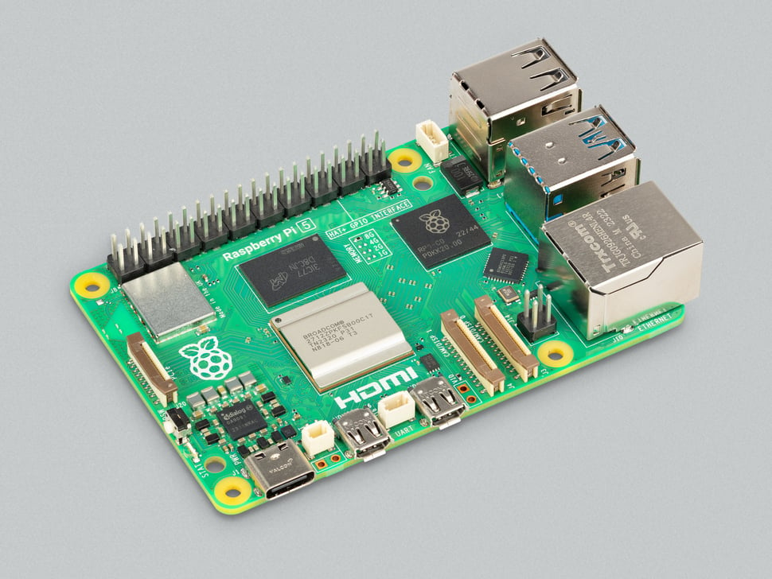
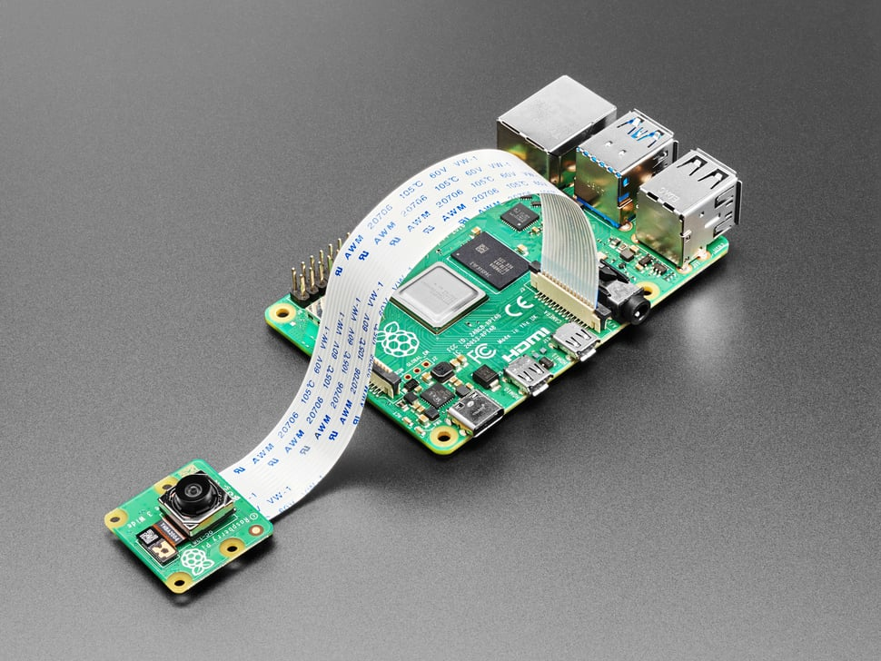
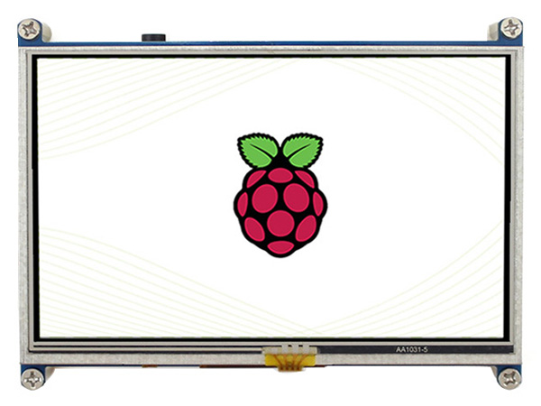
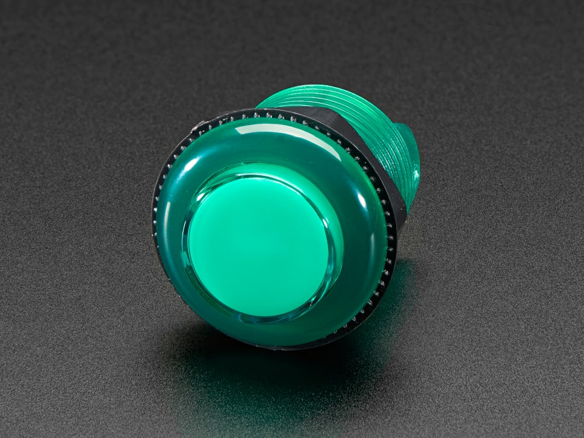

1. Our V1 look (project mockups)
Face layout to preserve: perimeter LED, centered camera, landscape screen, start/cancel controls, bottom strip exit. Keep this as the guest face; put the printer in a deeper volume behind/below.


2. Real V1 parts (reference photos)
Sourced from dealer / manufacturer product pages for the cheap-V1 and wall-mount manifests.
PageSize=w288h432-div2 and needs
nothing extra, while the CS2 cannot print at all without Sinfonia’s
libS6145ImageProcess, which is x86-only — on ARM you depend on the GPL
re-implementation.
Note also: DNP’s 2-inch cut is a printer-level mode, so while it is on, every
print comes out as strips.









3. Scale reality check — mockup face vs printer body
Side view at ~10 px / inch. The gold outline is the guest face the mockup implies; the white block is a DS620A. Depth is the hard problem.
4. Recommended shell volumes
Prefer DS620A for wall mount. Build as a split shell: cosmetic face + structural rear plate to studs + printer on a slide-out tray.
External target (integrated wall cabinet, DS620A)
| Axis | Inside clear | Outside (≈) | Why |
|---|---|---|---|
| Width | 11.5–12.0″ | 12.5–13.5″ | Printer 10.8″ + 0.35–0.5″/side for rails/air + wall thickness |
| Depth (from wall) | 16.0–17.0″ | 16.5–17.5″ | 14.4″ body + ~1.5–2″ rear cables + front chute lip |
| Height | 17–21″ | 19–23″ | UI face above printer: camera + 5–7″ screen + buttons + strip zone. No reader cradle in V1 — add ~3″ if you fit an S700 later. |
Local clearances (do not skip)
| Zone | Spacing | Notes |
|---|---|---|
| Printer sides | 10–15 mm each | Heat + no rattle against shell |
| Printer rear | 50–80 mm | AC inlet + USB bend radius |
| Printer front / chute | 40–60 mm beyond exit | Strip must fall free; catcher or guest grab |
| Printer service | full slide-out tray | Top-lid media changes are miserable in a wall box — rails win |
| Above printer (if fixed) | ≥ 40 mm vent gap | Dye-sub runs hot; vent top/sides |
| LED perimeter channel | 8–12 mm deep | COB + diffuser; keep camera optically baffled from glow |
| Camera pod | ~40–50 mm stack | Module 3 + optional photo ring + hood |
| Screen recess (5–7″) | 15–25 mm + cable loop | HDMI/power bend behind panel. Keep the recess shallow — a deep bezel shadows the QR and phones fail to scan. |
| Arcade buttons | 35–40 mm centers · ≥15 mm to edge | Keep clear of LED channel & screen bezel |
| Reader cradle | none in V1 | QR on screen. Reserve ~180 × 100 × 40 mm below the branding band if you add an S700 later. |
| Pi / PSU bay | ~120 × 90 × 50 mm | Separate from printer heat path; strain-relief USB to printer |
5. Front-face spacing (match the mockup)
Guest-face layout for a 13″-wide shell using a 5″ screen. With QR payment the screen is the only interactive surface, so the face loses the cradle band and drops from ~24″ to ~21″ tall.
- Top → camera: 1.5–2″ so the LED corner radius doesn’t vignette faces.
- Camera → screen: ~1–1.5″; enough for cable and a small photo-light bar.
- QR size on screen: render at ≥ 2″ square. A 5″ panel handles that with room for a “Scan to pay $5” caption; a 7″ makes it comfortable at arm’s length.
- Screen height: ~48–56″ AFF. The guest scans it standing, phone at chest height — too low and they crouch, too high and the glass catches ceiling lights.
- LED vs. QR: drop the perimeter LED to a low level while the QR is displayed. Full-brightness glow around a screen is the main reason kiosk QRs fail to scan.
- Strip slot height: aim ~36–42″ AFF for standing bar patrons if the whole unit is one cabinet.
- Reserved band: keep ~3″ between branding and printer bay unused, so an S700 cradle can be cut in later without re-lofting the whole face.
6. Practical build recommendation
- Do not chase the mockup’s shallow depth if the dye-sub lives in the same box. Guests see a slim face; the wall sees a ~17″ deep cabinet.
- Best V1 casing type: stud-mounted rear chassis + slide-out printer tray + removable front cosmetic shell (PETG/ASA panels).
- Pick DS620A or CS2 for width/height; skip RX1HS unless you accept a visibly bulkier wall box.
- QR payment simplifies the face: one screen cutout, two buttons, one chute. No cradle, no drip lip, no second powered device in the shell.
- Service spacing beats cosmetics: if the printer can’t slide out, the unit will never get media changes in a dive bar.
- Weight: printer alone 22–26 lb — cosmetic shell must not carry it; steel/ply rear plate to studs.
7. Payment: why QR now, S700 later
V1 ships with no payment hardware. That is the right call for a first unit, but it costs more per sale and adds a failure mode the booth cannot control.
| V1 — QR on screen | V2 — Stripe Reader S700 | |
|---|---|---|
| Hardware | $0 | $299 |
| Fee on a $5 sale | 44.5¢ (2.9% + 30¢ online) | 18.5¢ (2.7% + 5¢ card-present) |
| Face impact | none — uses the screen | ~3″ band + 180 × 100 × 40 mm pocket |
| Guest needs | a phone with working signal | a card in their hand |
| Time to pay | ~20–40 s (scan, load, confirm) | ~3 s (tap) |
When to switch
- The money trigger: the S700 saves 26¢ per session, so $299 of hardware pays for itself at roughly 1,150 sessions — about 14 months at 20 sessions/week, or 7 months at 40. Past that the reader is pure margin.
- The real trigger is signal, not math. QR payment depends on the guest’s phone getting data inside the bar. In a basement room with dead cell coverage, every sale fails and you never find out why. The booth’s own network is irrelevant — it can be on solid ethernet and still take zero money. Check bars for signal before promising QR-only.
- Drunk-guest friction is real: 30 seconds of scanning and typing at 1 a.m. converts worse than a tap. Expect QR to lose sales a reader would have caught.
- Build for the swap now: keep the reserved band in §5 empty and run a spare power lead to it. Retrofitting a cradle into a finished face means re-cutting the front panel.
8. Build pricing manifest
Every line item for one unit. Dealer prices checked 2026-07-24, USD, before shipping and tax. Green figures are sourced from a linked vendor page; grey figures are estimates for commodity parts we have not committed to a supplier on.
Printer — pick one
| Part | Why | Price | Source |
|---|---|---|---|
| DNP DS620A 10.8 × 14.4 × 6.7″ · ~28 lb | Wall pick — shallowest, fastest (~8.3 s), cleanest Pi driver path | $984.50–999 | PFSNY · FotoClub |
| Sinfonia CS2 (CHC-S6145) 10.7 × 13.82 × 6.61″ · ~22 lb | Cheapest real strips, but needs the x86-only Sinfonia image library or a GPL rebuild on ARM | $675 | EventPrinters · Desktop Darkroom |
| DNP DS-RX1HS 12.6 × 13.8 × 11.0″ · ~30 lb | 700 prints/roll — fewest reloads, but a visibly bulkier wall box | $695 | EventPrinters |
Consumables, compute and guest interface
| Part | Role | Price | Source |
|---|---|---|---|
| Media | |||
| DS620A 4×6 media kit 800 sheets → up to 1,600 strips 2-up | ~$0.08–0.09 of media per strip | $123.85–145 | EventPrinters |
| CS2 4×6 media kit 300 sheets per load | Only if you take the CS2 path | ~$120 | CS2 dealer media |
| Compute + capture | |||
| Raspberry Pi 4 Model B, 2 GB | Runs the UI, composes the dual-strip 4×6, drives the printer over USB | $54.99 | Micro Center |
| Raspberry Pi Camera Module 3 (standard) | 12 MP autofocus, Picamera2 | $29.25 | Adafruit #5657 |
| Official Pi USB-C 15 W PSU | Pi power — separate supply from printer and LEDs | $8.74 | Adafruit #4298 |
| SanDisk High Endurance 64 GB microSD | OS, temp photos, failed-job queue | $26.99 | Adorama |
| Guest interface | |||
| Waveshare 5″ HDMI LCD | Preview, countdown, and the payment QR — not optional in V1 | $34.99 | Waveshare |
| 2× illuminated arcade buttons + wiring | Start / Cancel, ~30 mm mount holes | $9.95 | Adafruit #3487 |
| Compute + interface subtotal everything above except printer and media | $164.91 | ||
Lighting, power and switching estimated
| Part | Role | Est. | Notes |
|---|---|---|---|
| Diffused 12 V LED ring or bar | Photo light at the camera — perimeter glow alone will not expose faces | $20–40 | Fires ~0.5 s before each frame |
| 12 V COB strip + diffuser | Decorative perimeter behind the translucent bezel | $15–30 | 8–12 mm channel; dim it while the QR is up |
| 12 V 3–5 A PSU | LED supply, separate from the Pi | $12–22 | No custom mains wiring inside the shell |
| 2-channel logic-level MOSFET board | Pi switches photo + decorative lights | $8–12 | Never drive 12 V LEDs from GPIO power pins |
| 5 V active buzzer | Countdown ticks and confirm tone | $3–6 | |
| Wire, connectors, strain relief, heat-set inserts, screws | Assembly consumables | $20–40 | Tamper-resistant heads on the outer shell |
| Subtotal | $78–150 | ||
Enclosure estimated
| Part | Role | Est. | Notes |
|---|---|---|---|
| PETG / ASA panels | Cosmetic face, camera pod, bezel, chute | $35–90 | Printed or cut to the §4 volumes |
| Plywood or steel rear plate + lag bolts | Structural mount to studs | $15–35 | Carries the full 22–28 lb printer — the shell must not |
| Drawer slides for the printer tray | Media changes without unmounting the box | $15–35 | Rate for ≥ 35 lb; skip this and the unit never gets reloaded |
| Subtotal | $65–160 | ||
Totals per configuration
| Configuration | Printer + media | Parts total | Read |
|---|---|---|---|
| Wall V1 — DS620A recommended | $1,108–1,144 | $1,420–1,620 | Best depth, best speed, no driver risk on the Pi |
| Cheapest real strips — CS2 | ~$795 | $1,105–1,270 | Saves ~$315, spends it back in ARM driver work |
| Bench proof-of-concept printer + media + Pi + camera + screen + buttons, no shell | — | $960–1,309 | Enough to prove four frames → dual 2×6 → cut strips |
| Payment hardware, V1 | QR on the existing screen | $0 | Software only — see §7 |
Later, not V1
| Part | Trigger | Price | Source |
|---|---|---|---|
| Stripe Reader S700 6.38 × 3.19 × 0.87″ · needs the reserved face band | ~1,150 sessions of fee savings, or a venue with dead cell signal | $299 | Stripe Terminal |
| 6×8 double-perf media three 2×8″ jumbo strips per sheet | Only if you want a taller keepsake later | ~$178 / 400 prints | Same dealers as the 4×6 kits |